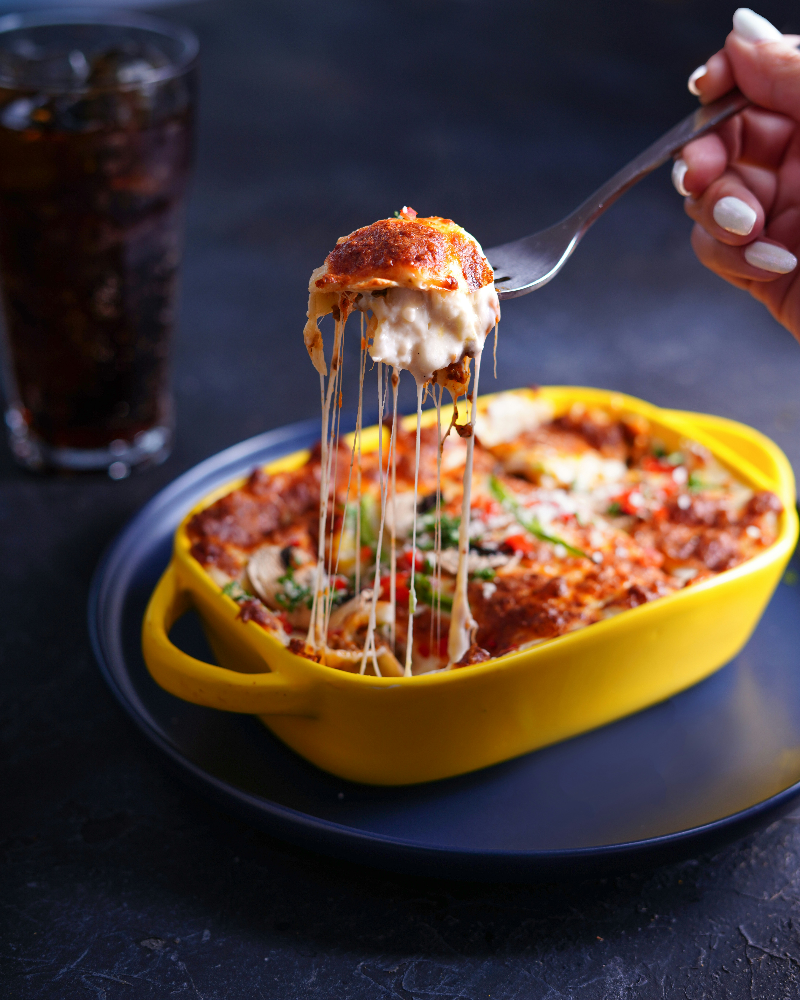

Lasagne
A hearty Italian Lasagne dish!
You can go to the Home Page or follow the links to find recipes for Enchiladas or Ramen.

Ingredients:
- Lasagne sheets
- 1 lb ground beef
- 2 cups marinara sauce
- 1 cup ricotta cheese
- 2 cups shredded mozzarella
- 1/2 cup grated Parmesan
- 1 chopped onion
- 2 cloves garlic, minced
- Olive oil, salt, pepper
Instructions
- Preheat oven to 375°F (190°C).
- Sauté onion and garlic in olive oil until soft. Add ground beef, cook until browned. Stir in marinara sauce and simmer 10 mins.
- Spread a thin layer of sauce in a baking dish. Layer lasagne sheets, meat sauce, ricotta, and mozzarella. Repeat layers, ending with mozzarella and Parmesan on top.
- Cover with foil and bake 25 mins. Remove foil, bake 10 more mins until bubbly and golden. Let rest 10 mins before serving